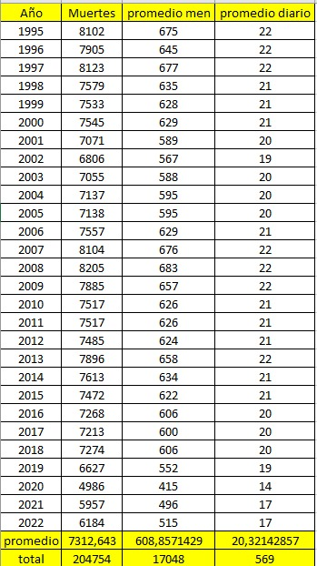
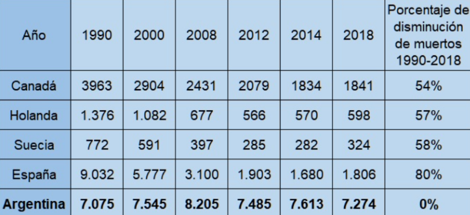
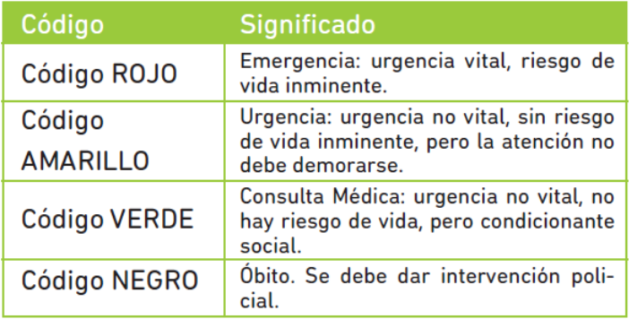

Este proyecto de investigación se basa en la necesidad de disminuir el nivel de accidentes y aumentar el tiempo de respuesta de los servicios de emergencia en acción, debido a los problemas de tránsito en las grandes ciudades, las cuales entorpecen la rapidez con que responde el servicio(teniendo en cuenta que hay vidas en cuestión) y, además, peligran la vida de los profesionales que se encargan del traslado hasta el lugar de emergencia. En vistas de tratar de abarcar a la mayor parte del territorio argentino, se analizará primeramente los lugares donde hay mayores problemas en la cuestión, las grandes ciudades.
Significados de las palabras accidente y siniestro(por la Real Academia Española):
Accidente: Suceso eventual o acción de que involuntariamente resulta daño para las personas o las cosas.
Siniestro: Avieso y malintencionado. (Avieso: Torcido, fuera de regla).
Sabiendo que para un conductor, la seguridad debería ser lo principal para él, los ocupantes del vehículo y los que están fuera del vehículo, nace la necesidad de identificar cómo se produce un accidente.
Partiendo de un artículo, accidente vial implica que:
En un accidente entran a jugar causas que no podemos controlar ni anticipar y que, por más cuidadosos que seamos, nos terminan afectando porque no somos los únicos actores de la situación; frente nuestro, al costado, adelante o atrás, tendremos otra u otras personas que están actuando según su circunstancia, según el estado del vehículo que conducen y según otros imponderables que no estamos en condiciones de conocer. De ahí que puede producirse un accidente vial no buscado ni querido porque se produjo involuntariamente, resultó un daño para otros y se convirtió en un suceso eventual que alteró el orden regular y previsible.
Extraido de: http://www.edu-via.com.ar/2010/02/08/accidente-siniestro-o-incidente-vial-cual-es-la-definicion-correcta/
Por lo tanto, se puede deducir de lo anterior, que un accidente vial es un acto que no podremos controlar. Pero, el hecho a analizar es ver si se puede disminuir la probabilidad del accidente, lo mejor posible. Lo podemos realizar analizando la palabra, siniestro:
Diferente es aquel hecho que se produce porque hubo una causa, se produce por causalidad, tuvo un origen, un principio que puede pasar desde un conductor irresponsable que ignora intencionalmente todas las normas, hasta el estado de caminos y rutas mal mantenidas por descuido de los organismos encargados de la manutención. Y aquí sí podemos referirnos a un siniestro porque el siniestro según la definición de la Real Academia Española: es la propensión o inclinación a lo malo; resabio, vicio o dañada costumbre que tiene el hombre o la bestia.
En definitiva, hay un conjunto de situaciones que hacen que, aún conociendo las normas, un individuo o una sociedad, deciden ignorarlas, lo que los sitúa al nivel de las bestias, no importa a quién ni qué se afecte, no hay solidaridad con el otro.
Extraido de: http://www.edu-via.com.ar/2010/02/08/accidente-siniestro-o-incidente-vial-cual-es-la-definicion-correcta/
Por otro lado, lo que estipula la ley LEY DE TRANSITO (Ley Nº 24.449):
ARTÍCULO 64. — PRESUNCIONES. Se considera accidente de tránsito todo hecho que produzca daño en personas o cosas como consecuencia de la circulación.
Se presume responsable de un accidente al que carecía de prioridad de paso o cometió una infracción relacionada con la causa del mismo, sin perjuicio de la responsabilidad que pueda corresponderles a los que, aun respetando las disposiciones, pudiendo haberlo evitado voluntariamente, no lo hicieron.
El peatón goza del beneficio de la duda y presunciones en su favor en tanto no incurra en graves violaciones a las reglas del tránsito.
En resumidas palabras el accidente vial, siniestro vial o acción que perjudica a otros en la vía de circulación pública, sucede por infracciones de tránsito o por no respetar las normas de tránsito. Entonces, se pueden tomar acciones, a partir de las definiciones anteriores, para disminuir esos perjuicios. Aunque ya hay medidas que fueron definidas, para los vehículos de emergencia, en la LEY DE TRANSITO (Ley Nº 24.449).
La cual dice en el CAPITULO IV - Reglas para casos especiales:
ARTICULO 61.— VEHICULOS DE EMERGENCIAS. Los vehículos de los servicios de emergencia pueden, excepcionalmente y en cumplimiento estricto de su misión específica, no respetar las normas referentes a la circulación, velocidad y estacionamiento, si ello les fuera absolutamente imprescindible en la ocasión que se trate siempre y cuando no ocasionen un mal mayor que aquel que intenten resolver.
Estos vehículos tendrán habilitación técnica especial y no excederán los 15 años de antigüedad.
Sólo en tal circunstancia deben circular, para advertir su presencia, con sus balizas distintivas de emergencia en funcionamiento y agregando el sonido de una sirena si su cometido requiriera extraordinaria urgencia.
Los demás usuarios de la vía pública tienen la obligación de tomar todas las medidas necesarias a su alcance para facilitar el avance de esos vehículos en tales circunstancias, y no pueden seguirlos.
La sirena debe usarse simultáneamente con las balizas distintivas, con la máxima moderación posible.
Se puede ver que al tener que cumplir con la emergencia, se incrementa la posibilidad de accidentes viales en el traslado del servicio. (debido a que puede circular a mayor velocidad de la permitida y no respetar normas en la acción de emergencia).
Es necesario tratar de disminuir los accidentes que se producen debido a las acciones del servicio de emergencia en acción?
La siguiente tabla fue confeccionada con información estadística de la página oficial de Luchemos por la vida, la cual es una O.N.G Argentina que se dedica a la educación vial desde hace ya varios años.
En los últimos 27 años se registran en Argentina un total de 204.754 muertes oficiales, un promedio de 608 muertes mensuales y 20 muertes diarias .


¿Qué es lo que buscamos resaltar con esta información?
Pues Argentina ostenta uno de los índices muertoriarios en siniestro más altos del mundo
¿Entonces qué buscamos con este proyecto?
Pues claramente disminuir los niveles accidentológicos, que involucren sistemas de emergencias y en caso de que se produzca poder tener una reacción eficaz y rápida de respuesta.
Lamentablemente Argentina no posee cifras oficiales por lo menos no públicas a las cuales podamos acceder para plantear la problemática a la cual estamos buscando dar una solución, el hecho de que no estén a la vista no oculta su existencia, todos vemos en las noticias, escuchamos o hemos visto accidentes de móviles policiales, patrulleros, o autobombas, por esto es que un gobierno adolecente como el nuestro no publicaría cifras oficiales que sean negativas para su imagen, pero la problemática sigue estando debajo del tapete; por esto se entiende que en primer lugar buscamos:
Se puede ayudar entonces, al servicio de emergencia a que sea más seguro en su cumplimiento?
Para ello, veamos cómo actúa el servicio de emergencia.
El sistema de atención médica de emergencias (SAME), articula las estrategias municipales con los estándares de servicio y calidad del servicio de atención médica de emergencias (SAME) de la Ciudad Autónoma de Buenos Aires.
Estipula que el servicio de emergencias estará compuesto por: radio operadores, telefonistas, conductores de ambulancias, médicos de ambulancias, coordinador médico de emergencias. Los cuales coordinados entre sí garantizan el servicio. Estos actúan de acuerdo a un triage (método de selección y clasificación de pacientes), estableciendo 4 niveles de prioridad:

En base a un procedimiento estipulado, el operador recolecta información y envía, o no, un recurso de emergencia próximo al lugar de la misma.
Y así, para todos los sistemas de emergencias (policía, bomberos y ambulancias) hay un punto en el que ocurre un traslado por las vías de circulación pública.
En ese instante comienza el accionar del recurso emergencia. Y en este campo podemos entrar en acción. Pues el recurso en emergencia se trasladará en una vía de circulación desde un punto de partida, hasta el punto donde está la emergencia y, muy probablemente luego tenga que En ese recorrido podemos reconocer factores que intervienen en el traslado. Por ejemplo, otros conductores (transporte público, motos, autos, bicicletas), calles de una mano, avenidas, cruces de
recorrer otro tramo en hasta un lugar donde se pueda terminar de resolver esa emergencia(por ejemplo: un hospital).
avenida con calle de una mano (con y sin semáforo), cruces de avenida con avenida (con y sin semáforo), autopistas, cruces de tren, peatones, etc.
En ese instante comienza el accionar del recurso emergencia. Y en este campo podemos entrar en acción. Pues el recurso en emergencia se trasladará en una vía de circulación desde un punto de partida, hasta el punto donde está la emergencia y, muy probablemente luego tenga que En ese recorrido podemos reconocer factores que intervienen en el traslado. Por ejemplo, otros conductores (transporte público, motos, autos, bicicletas), calles de una mano, avenidas, cruces de Teniendo en cuenta los factores anteriores, se promueve a crear un sistema informático basado en tecnología satelital, que incluya sistemas GPS, señales de emergencia, receptores de señal en semáforos y vehículos capaces de ser localizados que permita la planificación estratégica de rutas seguras y eficientes para los servicios de emergencia.